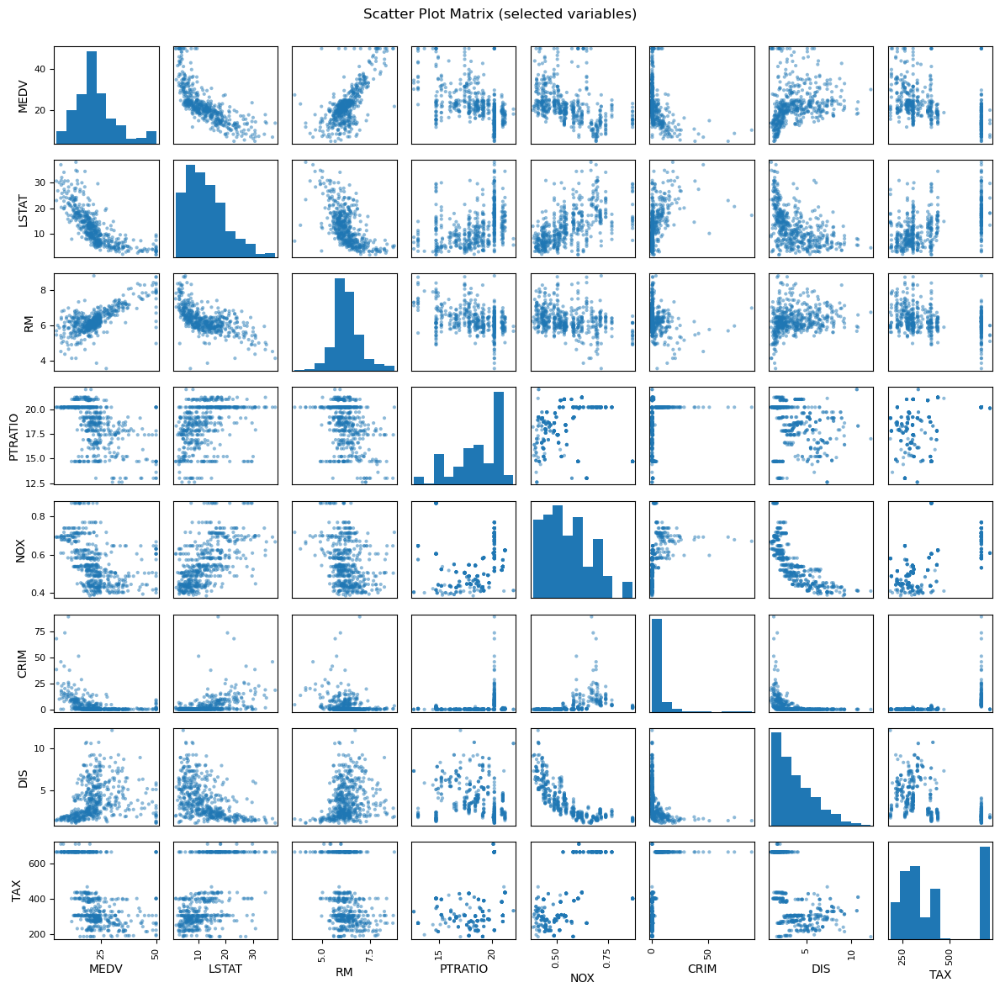
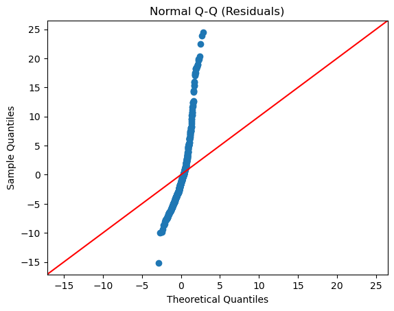

Ch 11. Boston Housing Price Analysis#
1. Data Upload#

ChatGPT: Explanation#
1. Dataset Overview#
This dataset contains housing prices and socioeconomic characteristics for various census tracts (cross-sectional units) in the Boston area of Massachusetts, USA, from the 1970s. Each row represents a single tract, and the columns represent tract-level characteristics (explanatory variables) or housing prices (response variable). It is one of the most widely used classic datasets for regression analysis examples.
Unit of observation: Census tracts within Boston (cross-sectional data)
Number of observations: 506
Number of explanatory variables: 13
Response variable: 1 (housing price)
2. Variable Descriptions#
Variable |
Description |
Type |
|---|---|---|
CRIM |
Per capita crime rate by town |
Continuous |
ZN |
Proportion of residential land zoned for lots over 25,000 sq.ft |
Continuous |
INDUS |
Proportion of non-retail business acres per town |
Continuous |
CHAS |
Charles River dummy variable (1 = tract bounds river) |
Binary |
NOX |
Nitric oxide concentration |
Continuous |
RM |
Average number of rooms per dwelling |
Continuous |
AGE |
Proportion of owner-occupied units built prior to 1940 |
Continuous |
DIS |
Weighted distance to employment centers |
Continuous |
RAD |
Index of accessibility to radial highways |
Continuous |
TAX |
Property tax rate |
Continuous |
PTRATIO |
Pupil-teacher ratio by town |
Continuous |
B |
Index based on proportion of Black residents (historical variable) |
Continuous |
LSTAT |
Percentage of lower-status population (%) |
Continuous |
MEDV |
Median home value (in $1,000s) |
Response |
3. Analytical Perspective#
This dataset has a structure well-suited for illustrating the standard multiple linear regression model:
\(Y\) =
MEDV(housing price)\(X\) = vector of tract characteristics
\(\beta\) = marginal effect of each characteristic on price
\(\epsilon\) = unexplained error
In other words, this dataset can be interpreted as a problem of estimating the determinants of housing prices.
4. Key Features of the Data#
Cross-sectional data The analysis examines differences across tracts, not changes over time.
Mix of continuous and discrete variables Good for demonstrating dummy variable handling in regression models (
CHAS).Potential multicollinearity
RAD,TAX,INDUS, etc., may be highly correlated with each other, making this suitable for regression diagnostics examples.Possible nonlinear relationships
LSTATandMEDVexhibit a relationship closer to a curve than a straight line, demonstrating the need for model extension.Socioeconomic data characteristics Not only physical attributes but also social factors influence price determination.
5. Summary#
This dataset is highly suitable as an educational resource for:
Understanding the structure of regression models
Diagnosing model assumptions
Explaining the difference between prediction and causal interpretation
In short, this dataset goes beyond simple price prediction and can be viewed as a standard textbook case for practicing statistical inference and econometric model interpretation.
As next steps, we can proceed with:
Summary statistics
Correlation analysis between variables
Scatter plot matrix
Which shall we start with?
2. Summary Statistics, Correlations, and Scatter Plot Matrix#
ChatGPT: Explanation#
1. Summary Statistics#
The table serves as a starting point for a quick overview of each variable’s distribution. The mean and standard deviation indicate center and spread, while the quartiles quickly reveal asymmetry and potential outliers.
Variable |
Count |
Mean |
Std |
Min |
Q1 (25%) |
Median (50%) |
Q3 (75%) |
Max |
|---|---|---|---|---|---|---|---|---|
CRIM |
506 |
3.614 |
8.602 |
0.006 |
0.082 |
0.257 |
3.677 |
88.976 |
ZN |
506 |
11.364 |
23.322 |
0.000 |
0.000 |
0.000 |
12.500 |
100.000 |
INDUS |
506 |
11.137 |
6.860 |
0.460 |
5.190 |
9.690 |
18.100 |
27.740 |
CHAS |
506 |
0.069 |
0.254 |
0.000 |
0.000 |
0.000 |
0.000 |
1.000 |
NOX |
506 |
0.555 |
0.116 |
0.385 |
0.449 |
0.538 |
0.624 |
0.871 |
RM |
506 |
6.285 |
0.703 |
3.561 |
5.885 |
6.208 |
6.623 |
8.780 |
AGE |
506 |
68.575 |
28.149 |
2.900 |
45.025 |
77.500 |
94.075 |
100.000 |
DIS |
506 |
3.795 |
2.106 |
1.130 |
2.100 |
3.207 |
5.188 |
12.127 |
RAD |
506 |
9.549 |
8.707 |
1.000 |
4.000 |
5.000 |
24.000 |
24.000 |
TAX |
506 |
408.237 |
168.537 |
187.000 |
279.000 |
330.000 |
666.000 |
711.000 |
PTRATIO |
506 |
18.456 |
2.165 |
12.600 |
17.400 |
19.050 |
20.200 |
22.000 |
B |
506 |
356.674 |
91.295 |
0.320 |
375.377 |
391.440 |
396.225 |
396.900 |
LSTAT |
506 |
12.653 |
7.141 |
1.730 |
6.950 |
11.360 |
16.955 |
37.970 |
MEDV |
506 |
22.533 |
9.197 |
5.000 |
17.025 |
21.200 |
25.000 |
50.000 |
Key Observations#
CHAS is a binary 0/1 variable, so its mean of 0.069 is interpreted as the proportion of 1s (approximately 6.9%).
CRIM has a maximum far exceeding its mean, suggesting a distribution with a long right tail (strong positive skewness).
MEDV has a maximum of 50, which looks like a cap. This raises suspicion of censoring or a ceiling effect in the dependent variable for regression.
2. Correlation Between Variables#
The correlation coefficient summarizes the degree of linear co-movement between two continuous variables. Here we use the Pearson correlation coefficient \(r\). The sign of \(r\) indicates direction (increase/decrease), and the absolute value indicates the strength of the linear relationship.
Correlation with MEDV (sorted by absolute value)#
Variable |
Correlation with MEDV |
|---|---|
LSTAT |
-0.738 |
RM |
0.695 |
PTRATIO |
-0.508 |
INDUS |
-0.484 |
TAX |
-0.469 |
NOX |
-0.427 |
CRIM |
-0.388 |
RAD |
-0.382 |
AGE |
-0.377 |
ZN |
0.360 |
B |
0.333 |
DIS |
0.250 |
CHAS |
0.175 |
Key Interpretations#
LSTAT–MEDV: Strong negative correlation. A clear tendency for housing prices to decrease as the proportion of lower-status population increases.
RM–MEDV: Strong positive correlation. A clear tendency for housing prices to increase as the number of rooms increases.
TAX, RAD, INDUS, NOX, etc., are likely also highly correlated with each other. In such cases, multicollinearity can arise in multiple regression, so one should not infer causation from simple correlations alone.
Correlation Matrix#

3. Scatter Plot Matrix#
The scatter plot matrix shows:
(Diagonal) Univariate distribution of each variable (histogram)
(Off-diagonal) Pairwise relationships between variables (linearity/nonlinearity, clusters, outliers, heterogeneity of variance)
all at once.

Key Observations (what to look for in this plot)#
MEDV–LSTAT: Negative direction, and shows signs of curvature (nonlinearity) rather than a purely linear pattern. This suggests candidates for transformation (e.g., log, polynomial, spline) in linear regression.
MEDV–RM: Positive direction and relatively clear, but if values are compressed at the top (50), this could reflect the effect of a dependent variable cap.
CRIM: Values are typically clustered near 0 with a few large outliers. A log transformation (log(CRIM)) is frequently considered in regression.
TAX–RAD: If the points cluster in a grid-like pattern, it indicates a discrete (or step-like) value structure, and a simple continuous assumption may be inappropriate.
Next, we will proceed with:
Fitting two simple regressions on MEDV (with LSTAT and RM), followed by residual diagnostics (Residuals vs Fitted, Q-Q), to naturally illustrate why transformation, nonlinearity, and outlier treatment become necessary.
3. Simple Linear Regression#
ChatGPT: Explanation#
Below, we fit a simple linear regression with \(Y=\text{MEDV}\) and \(X=\text{LSTAT}\), then examine model assumptions through residual diagnostics.
The model is:
1. Estimated Regression Coefficients#
Term |
Estimate |
Std. Error |
t-value |
p-value |
95% CI (Lower) |
95% CI (Upper) |
|---|---|---|---|---|---|---|
Intercept (constant) |
34.554 |
0.563 |
61.415 |
3.74e-236 |
33.448 |
35.659 |
LSTAT |
-0.950 |
0.039 |
-24.528 |
5.08e-88 |
-1.026 |
-0.874 |
Interpretation:
Slope \(\hat\beta_1=-0.95\): The estimated linear trend suggests that when LSTAT increases by 1 unit, the conditional mean of MEDV decreases by approximately 0.95. (MEDV is in units of $1,000.)
The p-value is extremely small, so the null hypothesis of “zero linear slope” is strongly rejected. However, this only indicates the existence of a linear relationship, not causation.
2. Goodness of Fit Summary#
Metric |
Value |
|---|---|
Number of observations |
506 |
R² |
0.544 |
Adj. R² |
0.543 |
Residual Std. Error (σ̂) |
6.216 |
F-statistic |
601.6 |
F-statistic p-value |
5.08e-88 |
Interpretation:
\(R^2=0.544\): LSTAT alone linearly explains approximately 54.4% of the variation in MEDV.
\(\hat\sigma=6.216\): The typical magnitude of prediction error is approximately 6.2 (in units of $1,000).
3. Scatter Plot with Regression Line#

A clear negative relationship is visible overall.
In the right segment (large LSTAT values), the linear line does not appear to fully capture the curvature of the data. This suggests possible nonlinearity.
4. Residual Diagnostics#
(1) Residuals vs Fitted#

In the “Residuals vs Fitted (MEDV ~ LSTAT)” plot, if residuals are randomly scattered around 0, the linearity and homoscedasticity assumptions are reasonably satisfied.
In practice, a fan-shaped pattern is visible where residual variance increases in the region of larger fitted values. This strongly suggests heteroscedasticity.
Additionally, if a systematic curved pattern is observed, \(E[Y|X]\) may not be a straight line (nonlinearity).
(2) Normal Q-Q#

In the “Normal Q-Q (Residuals)” plot, deviations from the line in the tails (especially the upper tail) are noticeable.
Residual normality may not be perfect. Since the sample size is 506, asymptotic normality of the estimators can be expected, but robust standard errors provide a practically useful alternative for interval estimation and hypothesis testing.
(3) Scale-Location#

In the “Scale-Location” plot, the tendency for \(\sqrt{|\text{standardized residuals}|}\) to increase with fitted values reconfirms violation of the homoscedasticity assumption (heteroscedasticity).
(4) Leverage vs Standardized Residuals, Influential Points#

In the “Leverage vs Standardized Residuals” plot, points with high leverage or large standardized residuals are candidates for influential observations.
The table below shows the top 10 observations by Cook’s distance (larger values indicate greater influence on regression coefficients).
Obs. Index |
LSTAT |
MEDV |
FITTED |
RESID |
LEVERAGE |
COOKS_D |
|---|---|---|---|---|---|---|
374 |
37.970 |
13.800 |
-1.520 |
15.320 |
0.027 |
0.086 |
412 |
34.370 |
17.900 |
1.901 |
15.999 |
0.020 |
0.070 |
214 |
29.550 |
23.700 |
6.480 |
17.220 |
0.013 |
0.051 |
141 |
34.410 |
14.400 |
1.863 |
12.537 |
0.020 |
0.043 |
373 |
34.770 |
13.800 |
1.521 |
12.279 |
0.021 |
0.043 |
161 |
1.730 |
50.000 |
32.910 |
17.090 |
0.007 |
0.025 |
162 |
1.920 |
50.000 |
32.730 |
17.270 |
0.006 |
0.025 |
204 |
2.880 |
50.000 |
31.818 |
18.182 |
0.006 |
0.025 |
370 |
2.960 |
50.000 |
31.742 |
18.258 |
0.006 |
0.025 |
195 |
2.970 |
50.000 |
31.732 |
18.268 |
0.006 |
0.025 |
Notable observations:
Observations with very large LSTAT values (e.g., 374) are extreme \(X\) values, so their leverage is high. If the linear model fails to explain that range well, their residuals are also large, making them likely influential points.
Observations with MEDV = 50 appear repeatedly. Large positive residuals arise because of the dependent variable ceiling, which can affect model fitting and diagnostics.
Summary: Issues Observed in LSTAT-Only Simple Linear Regression#
A strong negative linear trend in the mean relationship is clear (significant slope, large \(R^2\)).
However, residual plots simultaneously reveal signals of nonlinearity and heteroscedasticity.
Extreme LSTAT values and MEDV ceiling (50) observations play important roles in diagnostics.
Two natural next steps to choose from:
(A) LSTAT transformation / nonlinear extension: e.g., comparing with a model including a quadratic term $\(\text{MEDV}=\beta_0+\beta_1\text{LSTAT}+\beta_2\text{LSTAT}^2+\epsilon\)$
(B) Robust inference: Recalculating coefficient significance and confidence intervals using heteroscedasticity-consistent (robust) standard errors
4. Multiple Regression Analysis#
ChatGPT: Analysis#
Below, we summarize the results of the multiple regression analysis with all explanatory variables included simultaneously and provide an intuitive interpretation of the key findings.
1. Model Specification#
The meaning is straightforward: each coefficient represents the average change in MEDV caused by a one-unit increase in that variable, holding all other variables constant.
2. Regression Coefficient Summary (Key Variables)#
Multiple Regression: MEDV ~ All Explanatory Variables (OLS) Coefficient Table#
Variable |
Estimate |
Std. Error |
t-value |
p-value |
95% CI (Lower) |
95% CI (Upper) |
|---|---|---|---|---|---|---|
const |
36.459 |
5.103 |
7.144 |
3.28e-12 |
26.432 |
46.487 |
CRIM |
-0.108 |
0.033 |
-3.287 |
0.00109 |
-0.173 |
-0.043 |
ZN |
0.046 |
0.014 |
3.382 |
0.000778 |
0.019 |
0.073 |
INDUS |
0.021 |
0.061 |
0.334 |
0.738 |
-0.100 |
0.141 |
CHAS |
2.687 |
0.862 |
3.118 |
0.00193 |
0.994 |
4.380 |
NOX |
-17.767 |
3.820 |
-4.651 |
4.25e-06 |
-25.272 |
-10.262 |
RM |
3.810 |
0.418 |
9.116 |
1.98e-18 |
2.989 |
4.631 |
AGE |
0.001 |
0.013 |
0.052 |
0.958 |
-0.025 |
0.027 |
DIS |
-1.476 |
0.199 |
-7.398 |
6.01e-13 |
-1.867 |
-1.084 |
RAD |
0.306 |
0.066 |
4.613 |
5.07e-06 |
0.176 |
0.436 |
TAX |
-0.012 |
0.004 |
-3.280 |
0.00111 |
-0.020 |
-0.005 |
PTRATIO |
-0.953 |
0.131 |
-7.283 |
1.31e-12 |
-1.210 |
-0.696 |
B |
0.009 |
0.003 |
3.467 |
0.000573 |
0.004 |
0.015 |
LSTAT |
-0.525 |
0.051 |
-10.347 |
7.78e-23 |
-0.624 |
-0.425 |
Interpreting only the notable variables:
LSTAT (−0.525) Even after controlling for all other variables, a one-unit increase in LSTAT is associated with an average decrease of approximately 0.53 in MEDV. The effect is smaller than in simple regression (−0.95), because LSTAT shares explanatory power with other variables.
RM (+3.81) An increase of one room is associated with an approximately 3.8 increase in MEDV. This is the strongest positive effect even in multiple regression.
NOX (−17.77) Areas with higher pollution levels have substantially lower housing prices. Both the magnitude and significance of the coefficient are large.
PTRATIO (−0.95) Higher pupil-teacher ratios (worse educational conditions) are associated with lower housing prices.
CHAS (+2.69) Proximity to the river, holding other conditions equal, raises prices on average.
On the other hand:
INDUS and AGE are no longer significant when other variables are included. → Although simple correlations existed, other variables were actually accounting for those relationships.
3. Goodness of Fit Interpretation#
Metric |
Value |
|---|---|
\(R^2\) |
0.741 |
Adj. \(R^2\) |
0.734 |
Residual Std. Error |
4.745 |
In simple regression (LSTAT only), \(R^2 \approx 0.54\). In multiple regression, the explanatory power increased to approximately 74%.
This demonstrates that considering multiple factors simultaneously explains housing prices better.
4. Residuals vs Fitted Values Plot#

Compared to simple regression, the structural pattern in the residuals has diminished. → This signals that the model has improved with the addition of important explanatory variables.
However, the pattern is not completely random, indicating that nonlinearity, heteroscedasticity, and the ceiling problem (MEDV = 50) still partially remain.
5. Key Takeaways#
Coefficients in multiple regression represent the effect “holding other conditions constant.”
LSTAT remains an important variable, but some of the effect observed in simple regression overlapped with other variables.
Multiple regression substantially improves explanatory power, but interpretation must always keep in mind that these are controlled effects.
Natural next topics:
Multicollinearity (VIF) diagnostics
Comparing variable importance using standardized coefficients
Adding nonlinear terms (LSTAT², etc.)
5. Multicollinearity Diagnostics#
ChatGPT: Analysis#
Multicollinearity (VIF) diagnostics is a procedure to check whether the explanatory variables share so much information with each other that it becomes difficult to isolate each variable’s individual effect.
Key Intuition#
In multiple regression, the coefficient \(\hat\beta_j\) of a variable \(X_j\) means “how much does \(Y\) change when only \(X_j\) increases by 1, holding other variables fixed.” But if \(X_j\) moves almost in lockstep with other variables (strong correlation), the situation where “only \(X_j\) changes” rarely exists in the data. Then there is insufficient information to determine the slope, causing the standard error of the coefficient to increase (greater uncertainty), and estimates become unstable even with the same data.
The definition of VIF is:
where \(R_j^2\) is the R-squared from regressing \(X_j\) on all other explanatory variables.
Large \(R_j^2\) = \(X_j\) is almost predicted by other variables = very little independent information
As a result, the denominator \(1-R_j^2\) becomes small, making VIF large
The larger the VIF, the larger the variance (standard error) of \(\hat\beta_j\) (variance is “inflated”)
Interpretation Guidelines (Conventions)#
VIF ≈ 1: Virtually no problem
VIF ≥ 5: Caution warranted
VIF ≥ 10: Strong multicollinearity suspected (context-dependent)
VIF Diagnostic Results (Descending Order)#

Intuitive Interpretation (What Is Happening in This Data)#
TAX (9.01) and RAD (7.48) are the largest. This means “tax rate (TAX)” and “highway accessibility (RAD)” move almost as a bloc with other variables. Including both simultaneously makes it difficult to isolate each one’s “pure effect.”
NOX–INDUS–DIS–AGE also have VIFs in the 3–4 range. Pollution (NOX), industrial areas (INDUS), distance to city center (DIS), and housing age (AGE) tend to move together with urban structure, sharing information with each other.
CHAS is 1.07, nearly independent (not well predicted by other variables).
VIF and \(R_j^2\) Relationship (Top Values)#
Variable |
VIF |
\(R_j^2\) |
|---|---|---|
TAX |
9.01 |
0.889 |
RAD |
7.48 |
0.866 |
NOX |
4.39 |
0.772 |
INDUS |
3.99 |
0.749 |
DIS |
3.96 |
0.747 |
For example, TAX has \(R_j^2=0.889\), meaning “TAX is 88.9% explained by the other variables,” which is why VIF rises to 9. In other words, TAX contributes little independent information.
Why This Matters (Problems That Arise in Practice)#
Prediction performance itself may be fine. Multicollinearity does not necessarily ruin prediction.
However, interpretation (each variable’s effect) and inference (significance, confidence intervals) become unstable.
Standard errors increase, potentially inflating p-values (making results appear non-significant).
Coefficient signs may flip, contradicting intuition.
Removing one variable or slightly changing the data can substantially alter coefficients.
Next Step Options#
Remove or replace one of TAX and RAD, then compare whether coefficient stability improves
Compare variable importance using standardized coefficients (or partial \(R^2\))
Switch to regularized regression such as Ridge, which is robust to collinearity
If desired, we can show a table comparing coefficients when TAX and RAD are included simultaneously versus when one is removed, to directly demonstrate how collinearity destabilizes coefficient interpretation.
6. Standardized Coefficients#
ChatGPT: Analysis#
Comparing variable importance using standardized coefficients means placing variables with different units on the same footing to see which has a stronger influence.
What Are Standardized Coefficients?#
The original regression coefficients are highly dependent on the unit of measurement:
RM: “1 additional room”
NOX: “0.01 increase in pollution concentration”
TAX: “1 unit increase in tax”
These coefficients cannot be directly compared in magnitude because their units differ.
Standardized coefficients are constructed as follows:
Transform each explanatory variable to have mean 0 and standard deviation 1
Also transform the dependent variable (MEDV) to mean 0 and standard deviation 1
The regression coefficients obtained in this state = standardized coefficients (\(\beta\))
Thus, standardized coefficients have the following interpretation:
When the variable changes by 1 standard deviation, how many standard deviations does MEDV change?
Variable Importance Table Based on Standardized Coefficients#
| Variable | Standardized Coef. (\(\beta\)) | \(|\beta|\) | |:–:|:–:|:–:| | LSTAT | -0.407 | 0.407 | | DIS | -0.338 | 0.338 | | RM | 0.291 | 0.291 | | RAD | 0.290 | 0.290 | | TAX | -0.226 | 0.226 | | PTRATIO | -0.224 | 0.224 | | NOX | -0.224 | 0.224 | | ZN | 0.118 | 0.118 | | CRIM | -0.101 | 0.101 | | B | 0.092 | 0.092 | | CHAS | 0.074 | 0.074 | | INDUS | 0.015 | 0.015 | | AGE | 0.002 | 0.002 |
(Larger \(|\beta|\) indicates relatively greater importance)
Intuitive Interpretation#
LSTAT is the most important → “Holding other variables constant,” variation in LSTAT has the greatest impact on housing price variation.
DIS, RM, and RAD also have large effects. → Distance, number of rooms, and highway accessibility are key pillars in price formation.
INDUS and AGE have almost no effect. → Once other variables are already controlled, these variables add virtually no additional explanatory power.
An important caveat:
Standardized coefficients are a tool for comparing ‘which appears more important,’ not numbers that tell us about causal magnitude.
One-Sentence Summary#
Standardized coefficients are:
“A measure that puts all variables on the same unit scale (standard deviations) and shows which variable shakes housing prices the most.”
7. Log-Transformed Regression Analysis#
ChatGPT: Analysis#
Below, we first explain the meaning of why we take logarithms, then present the coefficient estimates table and interpretation of the log-transformed regression.
1. The Meaning of Taking Logarithms of Appropriate Variables (Intuition)#
Log transformation is not a “trick to force linear regression to work,” but rather a method for translating relationships that are more natural in reality into a model. There are three key reasons.
To enable interpretation in terms of proportional change Housing prices often move in terms of “what percentage increase” rather than “\(10,000 increase." Using \)\log(\text{MEDV})$ allows us to interpret the effect of explanatory variables as % changes.
To straighten nonlinear relationships Variables like LSTAT and CRIM, whose impact diminishes as values increase, show curved relationships in raw data but become closer to linear after taking logarithms.
To mitigate heteroscedasticity and the influence of extreme values This reduces the problem of a few large values dominating the regression and alleviates the pattern of errors growing with price levels.
Accordingly, here we take logarithms of:
MEDV, LSTAT, CRIM, NOX, DIS, TAX — positive, highly skewed variables
RM and PTRATIO are left in level (untransformed).
2. Log-Transformed Regression Model#
The model is:
3. Coefficient Estimates Table#
Variable |
Estimate |
Std. Error |
t-value |
p-value |
95% CI (Lower) |
95% CI (Upper) |
|---|---|---|---|---|---|---|
const |
3.982 |
0.193 |
20.607 |
1.09e-68 |
3.603 |
4.362 |
L_LSTAT |
-0.403 |
0.026 |
-15.659 |
3.14e-45 |
-0.453 |
-0.352 |
RM |
0.080 |
0.018 |
4.433 |
1.15e-05 |
0.045 |
0.116 |
PTRATIO |
-0.029 |
0.005 |
-5.748 |
1.57e-08 |
-0.039 |
-0.019 |
L_CRIM |
-0.028 |
0.008 |
-3.574 |
0.000386 |
-0.044 |
-0.013 |
L_NOX |
-0.334 |
0.108 |
-3.103 |
0.00202 |
-0.545 |
-0.122 |
L_DIS |
-0.169 |
0.034 |
-4.924 |
1.15e-06 |
-0.236 |
-0.101 |
CHAS |
0.132 |
0.037 |
3.538 |
0.000441 |
0.059 |
0.205 |
Goodness of fit:
\(R^2 = 0.744\), Adj. \(R^2 = 0.740\)
The explanatory power is similar to or slightly more stable than the untransformed multiple regression.
4. Coefficient Interpretation (Key Points)#
(1) Log–log variables: Elasticity#
LSTAT (−0.403) → A 1% increase in LSTAT is associated with an approximately 0.40% decrease in MEDV. → A much more natural and stable interpretation than simple linear regression.
CRIM (−0.028) → A 1% increase in crime rate is associated with approximately a 0.03% decrease in housing prices.
NOX (−0.334) → A 1% increase in pollution is associated with approximately a 0.33% decrease in prices.
DIS (−0.169) → A 1% increase in distance to employment centers is associated with approximately a 0.17% decrease in prices.
(2) Log–level variables: Semi-elasticity#
RM (0.080) → An increase of 1 room is associated with an approximately 8% increase in housing prices.
PTRATIO (−0.029) → A 1-unit increase in the pupil-teacher ratio is associated with an approximately 2.9% decrease in prices.
(3) Dummy variable#
CHAS (0.132) → Riverside tracts are $\(\exp(0.132)-1 \approx 14.1\%\)$ approximately 14% more expensive than non-riverside tracts.
5. Summary#
Log-transformed regression:
Reframes the relationship from “how much does it change” to “by what percentage does it change”
Mitigates nonlinearity and heteroscedasticity problems
Translates coefficient interpretation into the intuitive language of elasticity.
These results show that:
LSTAT, RM, PTRATIO, and NOX remain key determinants of housing prices even on the log scale.
Good topics to follow up with:
Comparing residuals: log model vs. raw-data model
Model comparison: log–log vs. polynomial (LSTAT²)
Why “% change” matters in policy interpretation
💻 Python Code#
import pandas as pd
url = "https://raw.githubusercontent.com/selva86/datasets/master/BostonHousing.csv"
df = pd.read_csv(url)
df.columns = [c.upper() for c in df.columns]
df
| CRIM | ZN | INDUS | CHAS | NOX | RM | AGE | DIS | RAD | TAX | PTRATIO | B | LSTAT | MEDV | |
|---|---|---|---|---|---|---|---|---|---|---|---|---|---|---|
| 0 | 0.00632 | 18.0 | 2.31 | 0 | 0.538 | 6.575 | 65.2 | 4.0900 | 1 | 296 | 15.3 | 396.90 | 4.98 | 24.0 |
| 1 | 0.02731 | 0.0 | 7.07 | 0 | 0.469 | 6.421 | 78.9 | 4.9671 | 2 | 242 | 17.8 | 396.90 | 9.14 | 21.6 |
| 2 | 0.02729 | 0.0 | 7.07 | 0 | 0.469 | 7.185 | 61.1 | 4.9671 | 2 | 242 | 17.8 | 392.83 | 4.03 | 34.7 |
| 3 | 0.03237 | 0.0 | 2.18 | 0 | 0.458 | 6.998 | 45.8 | 6.0622 | 3 | 222 | 18.7 | 394.63 | 2.94 | 33.4 |
| 4 | 0.06905 | 0.0 | 2.18 | 0 | 0.458 | 7.147 | 54.2 | 6.0622 | 3 | 222 | 18.7 | 396.90 | 5.33 | 36.2 |
| ... | ... | ... | ... | ... | ... | ... | ... | ... | ... | ... | ... | ... | ... | ... |
| 501 | 0.06263 | 0.0 | 11.93 | 0 | 0.573 | 6.593 | 69.1 | 2.4786 | 1 | 273 | 21.0 | 391.99 | 9.67 | 22.4 |
| 502 | 0.04527 | 0.0 | 11.93 | 0 | 0.573 | 6.120 | 76.7 | 2.2875 | 1 | 273 | 21.0 | 396.90 | 9.08 | 20.6 |
| 503 | 0.06076 | 0.0 | 11.93 | 0 | 0.573 | 6.976 | 91.0 | 2.1675 | 1 | 273 | 21.0 | 396.90 | 5.64 | 23.9 |
| 504 | 0.10959 | 0.0 | 11.93 | 0 | 0.573 | 6.794 | 89.3 | 2.3889 | 1 | 273 | 21.0 | 393.45 | 6.48 | 22.0 |
| 505 | 0.04741 | 0.0 | 11.93 | 0 | 0.573 | 6.030 | 80.8 | 2.5050 | 1 | 273 | 21.0 | 396.90 | 7.88 | 11.9 |
506 rows × 14 columns
# ==============
# Boston Housing
# ==============
import pandas as pd
import numpy as np
import matplotlib.pyplot as plt
import statsmodels.api as sm
from statsmodels.graphics.gofplots import qqplot
from statsmodels.stats.outliers_influence import variance_inflation_factor
from pandas.plotting import scatter_matrix
# ------------------------------------------------------------
# 1) Descriptive statistics
# ------------------------------------------------------------
print("\n=== Descriptive Statistics ===\n")
print(df.describe())
=== Descriptive Statistics ===
CRIM ZN INDUS CHAS NOX RM \
count 506.000000 506.000000 506.000000 506.000000 506.000000 506.000000
mean 3.613524 11.363636 11.136779 0.069170 0.554695 6.284634
std 8.601545 23.322453 6.860353 0.253994 0.115878 0.702617
min 0.006320 0.000000 0.460000 0.000000 0.385000 3.561000
25% 0.082045 0.000000 5.190000 0.000000 0.449000 5.885500
50% 0.256510 0.000000 9.690000 0.000000 0.538000 6.208500
75% 3.677083 12.500000 18.100000 0.000000 0.624000 6.623500
max 88.976200 100.000000 27.740000 1.000000 0.871000 8.780000
AGE DIS RAD TAX PTRATIO B \
count 506.000000 506.000000 506.000000 506.000000 506.000000 506.000000
mean 68.574901 3.795043 9.549407 408.237154 18.455534 356.674032
std 28.148861 2.105710 8.707259 168.537116 2.164946 91.294864
min 2.900000 1.129600 1.000000 187.000000 12.600000 0.320000
25% 45.025000 2.100175 4.000000 279.000000 17.400000 375.377500
50% 77.500000 3.207450 5.000000 330.000000 19.050000 391.440000
75% 94.075000 5.188425 24.000000 666.000000 20.200000 396.225000
max 100.000000 12.126500 24.000000 711.000000 22.000000 396.900000
LSTAT MEDV
count 506.000000 506.000000
mean 12.653063 22.532806
std 7.141062 9.197104
min 1.730000 5.000000
25% 6.950000 17.025000
50% 11.360000 21.200000
75% 16.955000 25.000000
max 37.970000 50.000000
# ------------------------------------------------------------
# 2) Correlation matrix
# ------------------------------------------------------------
print("\n=== Correlation Matrix ===\n")
print(df.corr())
=== Correlation Matrix ===
CRIM ZN INDUS CHAS NOX RM AGE \
CRIM 1.000000 -0.200469 0.406583 -0.055892 0.420972 -0.219247 0.352734
ZN -0.200469 1.000000 -0.533828 -0.042697 -0.516604 0.311991 -0.569537
INDUS 0.406583 -0.533828 1.000000 0.062938 0.763651 -0.391676 0.644779
CHAS -0.055892 -0.042697 0.062938 1.000000 0.091203 0.091251 0.086518
NOX 0.420972 -0.516604 0.763651 0.091203 1.000000 -0.302188 0.731470
RM -0.219247 0.311991 -0.391676 0.091251 -0.302188 1.000000 -0.240265
AGE 0.352734 -0.569537 0.644779 0.086518 0.731470 -0.240265 1.000000
DIS -0.379670 0.664408 -0.708027 -0.099176 -0.769230 0.205246 -0.747881
RAD 0.625505 -0.311948 0.595129 -0.007368 0.611441 -0.209847 0.456022
TAX 0.582764 -0.314563 0.720760 -0.035587 0.668023 -0.292048 0.506456
PTRATIO 0.289946 -0.391679 0.383248 -0.121515 0.188933 -0.355501 0.261515
B -0.385064 0.175520 -0.356977 0.048788 -0.380051 0.128069 -0.273534
LSTAT 0.455621 -0.412995 0.603800 -0.053929 0.590879 -0.613808 0.602339
MEDV -0.388305 0.360445 -0.483725 0.175260 -0.427321 0.695360 -0.376955
DIS RAD TAX PTRATIO B LSTAT MEDV
CRIM -0.379670 0.625505 0.582764 0.289946 -0.385064 0.455621 -0.388305
ZN 0.664408 -0.311948 -0.314563 -0.391679 0.175520 -0.412995 0.360445
INDUS -0.708027 0.595129 0.720760 0.383248 -0.356977 0.603800 -0.483725
CHAS -0.099176 -0.007368 -0.035587 -0.121515 0.048788 -0.053929 0.175260
NOX -0.769230 0.611441 0.668023 0.188933 -0.380051 0.590879 -0.427321
RM 0.205246 -0.209847 -0.292048 -0.355501 0.128069 -0.613808 0.695360
AGE -0.747881 0.456022 0.506456 0.261515 -0.273534 0.602339 -0.376955
DIS 1.000000 -0.494588 -0.534432 -0.232471 0.291512 -0.496996 0.249929
RAD -0.494588 1.000000 0.910228 0.464741 -0.444413 0.488676 -0.381626
TAX -0.534432 0.910228 1.000000 0.460853 -0.441808 0.543993 -0.468536
PTRATIO -0.232471 0.464741 0.460853 1.000000 -0.177383 0.374044 -0.507787
B 0.291512 -0.444413 -0.441808 -0.177383 1.000000 -0.366087 0.333461
LSTAT -0.496996 0.488676 0.543993 0.374044 -0.366087 1.000000 -0.737663
MEDV 0.249929 -0.381626 -0.468536 -0.507787 0.333461 -0.737663 1.000000
# ------------------------------------------------------------
# 3) Scatter plot matrix
# ------------------------------------------------------------
subset_cols = ['MEDV','LSTAT','RM','PTRATIO','NOX','CRIM','DIS','TAX']
scatter_matrix(df[subset_cols], figsize=(12, 12), diagonal='hist')
plt.suptitle("Scatter Plot Matrix (selected variables)")
plt.tight_layout(rect=[0, 0, 1, 0.98])
plt.show()

# ------------------------------------------------------------
# 4) Simple regression: MEDV ~ LSTAT
# ------------------------------------------------------------
y = df["MEDV"]
X = sm.add_constant(df[["LSTAT"]])
model_simple = sm.OLS(y, X).fit()
print("\n=== Simple Regression: MEDV ~ LSTAT ===\n")
print(model_simple.summary())
=== Simple Regression: MEDV ~ LSTAT ===
OLS Regression Results
==============================================================================
Dep. Variable: MEDV R-squared: 0.544
Model: OLS Adj. R-squared: 0.543
Method: Least Squares F-statistic: 601.6
Date: Mon, 30 Mar 2026 Prob (F-statistic): 5.08e-88
Time: 22:34:28 Log-Likelihood: -1641.5
No. Observations: 506 AIC: 3287.
Df Residuals: 504 BIC: 3295.
Df Model: 1
Covariance Type: nonrobust
==============================================================================
coef std err t P>|t| [0.025 0.975]
------------------------------------------------------------------------------
const 34.5538 0.563 61.415 0.000 33.448 35.659
LSTAT -0.9500 0.039 -24.528 0.000 -1.026 -0.874
==============================================================================
Omnibus: 137.043 Durbin-Watson: 0.892
Prob(Omnibus): 0.000 Jarque-Bera (JB): 291.373
Skew: 1.453 Prob(JB): 5.36e-64
Kurtosis: 5.319 Cond. No. 29.7
==============================================================================
Notes:
[1] Standard Errors assume that the covariance matrix of the errors is correctly specified.
# Residual diagnostics
infl = model_simple.get_influence()
plt.scatter(model_simple.fittedvalues, model_simple.resid)
plt.axhline(0)
plt.xlabel("Fitted values")
plt.ylabel("Residuals")
plt.title("Residuals vs Fitted (MEDV ~ LSTAT)")
plt.show()
qqplot(model_simple.resid, line="45")
plt.title("Normal Q-Q (Residuals)")
plt.show()


# ------------------------------------------------------------
# 5) Multiple regression: MEDV ~ all covariates
# ------------------------------------------------------------
X = sm.add_constant(df.drop(columns=["MEDV"]))
model_multi = sm.OLS(y, X).fit()
print("\n=== Multiple Regression: MEDV ~ all covariates ===\n")
print(model_multi.summary())
=== Multiple Regression: MEDV ~ all covariates ===
OLS Regression Results
==============================================================================
Dep. Variable: MEDV R-squared: 0.741
Model: OLS Adj. R-squared: 0.734
Method: Least Squares F-statistic: 108.1
Date: Mon, 30 Mar 2026 Prob (F-statistic): 6.72e-135
Time: 22:34:29 Log-Likelihood: -1498.8
No. Observations: 506 AIC: 3026.
Df Residuals: 492 BIC: 3085.
Df Model: 13
Covariance Type: nonrobust
==============================================================================
coef std err t P>|t| [0.025 0.975]
------------------------------------------------------------------------------
const 36.4595 5.103 7.144 0.000 26.432 46.487
CRIM -0.1080 0.033 -3.287 0.001 -0.173 -0.043
ZN 0.0464 0.014 3.382 0.001 0.019 0.073
INDUS 0.0206 0.061 0.334 0.738 -0.100 0.141
CHAS 2.6867 0.862 3.118 0.002 0.994 4.380
NOX -17.7666 3.820 -4.651 0.000 -25.272 -10.262
RM 3.8099 0.418 9.116 0.000 2.989 4.631
AGE 0.0007 0.013 0.052 0.958 -0.025 0.027
DIS -1.4756 0.199 -7.398 0.000 -1.867 -1.084
RAD 0.3060 0.066 4.613 0.000 0.176 0.436
TAX -0.0123 0.004 -3.280 0.001 -0.020 -0.005
PTRATIO -0.9527 0.131 -7.283 0.000 -1.210 -0.696
B 0.0093 0.003 3.467 0.001 0.004 0.015
LSTAT -0.5248 0.051 -10.347 0.000 -0.624 -0.425
==============================================================================
Omnibus: 178.041 Durbin-Watson: 1.078
Prob(Omnibus): 0.000 Jarque-Bera (JB): 783.126
Skew: 1.521 Prob(JB): 8.84e-171
Kurtosis: 8.281 Cond. No. 1.51e+04
==============================================================================
Notes:
[1] Standard Errors assume that the covariance matrix of the errors is correctly specified.
[2] The condition number is large, 1.51e+04. This might indicate that there are
strong multicollinearity or other numerical problems.
# ------------------------------------------------------------
# 6) Multicollinearity: VIF
# ------------------------------------------------------------
print("\n=== Variance Inflation Factors (VIF) ===\n")
X_vif = df.drop(columns=["MEDV"])
X_vif_const = sm.add_constant(X_vif)
for i, col in enumerate(X_vif_const.columns):
vif = variance_inflation_factor(X_vif_const.values, i)
print(f"{col:>10s} : {vif:6.2f}")
=== Variance Inflation Factors (VIF) ===
const : 585.27
CRIM : 1.79
ZN : 2.30
INDUS : 3.99
CHAS : 1.07
NOX : 4.39
RM : 1.93
AGE : 3.10
DIS : 3.96
RAD : 7.48
TAX : 9.01
PTRATIO : 1.80
B : 1.35
LSTAT : 2.94
# ------------------------------------------------------------
# 7) Standardized coefficients
# ------------------------------------------------------------
X_std = (X_vif - X_vif.mean()) / X_vif.std(ddof=0)
y_std = (y - y.mean()) / y.std(ddof=0)
model_std = sm.OLS(y_std, X_std).fit()
print("\n=== Standardized Regression (no intercept) ===\n")
print(model_std.summary())
=== Standardized Regression (no intercept) ===
OLS Regression Results
=======================================================================================
Dep. Variable: MEDV R-squared (uncentered): 0.741
Model: OLS Adj. R-squared (uncentered): 0.734
Method: Least Squares F-statistic: 108.3
Date: Mon, 30 Mar 2026 Prob (F-statistic): 3.46e-135
Time: 22:34:29 Log-Likelihood: -376.55
No. Observations: 506 AIC: 779.1
Df Residuals: 493 BIC: 834.0
Df Model: 13
Covariance Type: nonrobust
==============================================================================
coef std err t P>|t| [0.025 0.975]
------------------------------------------------------------------------------
CRIM -0.1010 0.031 -3.290 0.001 -0.161 -0.041
ZN 0.1177 0.035 3.385 0.001 0.049 0.186
INDUS 0.0153 0.046 0.335 0.738 -0.075 0.105
CHAS 0.0742 0.024 3.122 0.002 0.027 0.121
NOX -0.2238 0.048 -4.656 0.000 -0.318 -0.129
RM 0.2911 0.032 9.125 0.000 0.228 0.354
AGE 0.0021 0.040 0.052 0.958 -0.077 0.081
DIS -0.3378 0.046 -7.406 0.000 -0.427 -0.248
RAD 0.2897 0.063 4.618 0.000 0.166 0.413
TAX -0.2260 0.069 -3.283 0.001 -0.361 -0.091
PTRATIO -0.2243 0.031 -7.290 0.000 -0.285 -0.164
B 0.0924 0.027 3.470 0.001 0.040 0.145
LSTAT -0.4074 0.039 -10.358 0.000 -0.485 -0.330
==============================================================================
Omnibus: 178.041 Durbin-Watson: 1.078
Prob(Omnibus): 0.000 Jarque-Bera (JB): 783.126
Skew: 1.521 Prob(JB): 8.84e-171
Kurtosis: 8.281 Cond. No. 9.82
==============================================================================
Notes:
[1] R² is computed without centering (uncentered) since the model does not contain a constant.
[2] Standard Errors assume that the covariance matrix of the errors is correctly specified.
# ------------------------------------------------------------
# 8) Log-transformed regression
# ------------------------------------------------------------
df_log = df.copy()
for col in ["MEDV", "CRIM", "NOX", "DIS", "LSTAT"]:
df_log[f"L_{col}"] = np.log(df_log[col])
y_log = df_log["L_MEDV"]
X_log = df_log[[
"L_LSTAT", # log-log
"RM", # level-log
"PTRATIO", # level-log
"L_CRIM", # log-log
"L_NOX", # log-log
"L_DIS", # log-log
"CHAS" # dummy
]]
X_log = sm.add_constant(X_log)
model_log = sm.OLS(y_log, X_log).fit()
print("\n=== Log-transformed Regression: log(MEDV) ===\n")
print(model_log.summary())
=== Log-transformed Regression: log(MEDV) ===
OLS Regression Results
==============================================================================
Dep. Variable: L_MEDV R-squared: 0.744
Model: OLS Adj. R-squared: 0.740
Method: Least Squares F-statistic: 206.3
Date: Mon, 30 Mar 2026 Prob (F-statistic): 1.00e-142
Time: 22:34:29 Log-Likelihood: 79.486
No. Observations: 506 AIC: -143.0
Df Residuals: 498 BIC: -109.2
Df Model: 7
Covariance Type: nonrobust
==============================================================================
coef std err t P>|t| [0.025 0.975]
------------------------------------------------------------------------------
const 3.9825 0.193 20.607 0.000 3.603 4.362
L_LSTAT -0.4028 0.026 -15.659 0.000 -0.453 -0.352
RM 0.0801 0.018 4.433 0.000 0.045 0.116
PTRATIO -0.0288 0.005 -5.748 0.000 -0.039 -0.019
L_CRIM -0.0284 0.008 -3.574 0.000 -0.044 -0.013
L_NOX -0.3337 0.108 -3.103 0.002 -0.545 -0.122
L_DIS -0.1686 0.034 -4.924 0.000 -0.236 -0.101
CHAS 0.1320 0.037 3.538 0.000 0.059 0.205
==============================================================================
Omnibus: 47.821 Durbin-Watson: 0.913
Prob(Omnibus): 0.000 Jarque-Bera (JB): 162.394
Skew: -0.373 Prob(JB): 5.45e-36
Kurtosis: 5.673 Cond. No. 419.
==============================================================================
Notes:
[1] Standard Errors assume that the covariance matrix of the errors is correctly specified.